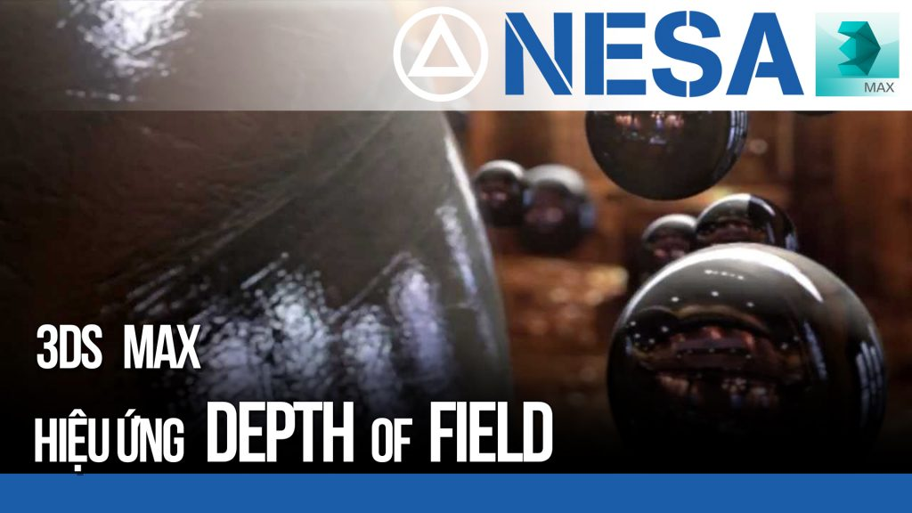
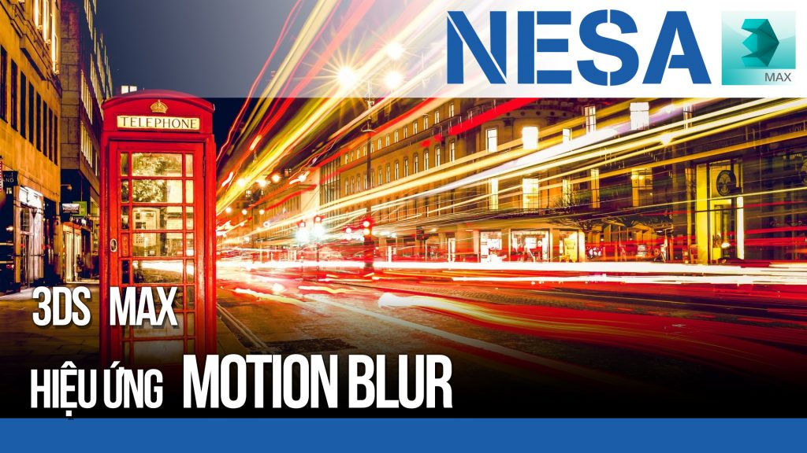
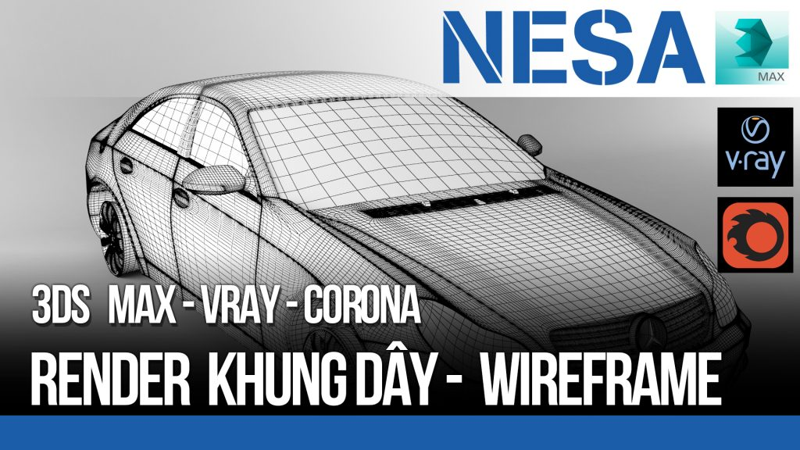

Hiệu ứng Depth Of Field DOF 3Ds Max Vray
Hiệu ứng DOF hay còn gọi là độ sâu trường ảnh. Cũng giống như chụp ảnh xóa phông, làm nổi…
XEM THÊM

Hiệu ứng MOTION Blur trong 3Ds Max
Nếu bạn từng biết đến chụp ảnh phơi sáng thì Motion Blur chính là hiệu ứng này. Bạn chỉ cần…
XEM THÊM

Render Khung dây Wiefarme trong Vray
Bạn muốn show lưới dựng hình. Đây là cách để làm điều đó. https://youtu.be/bSLm8BN_1oU Các bạn hãy theo dõi NESA iCAD để…
XEM THÊMBO GÓC VẬT LIỆU BẰNG VRAYEDGESTEX VÀ CORONAROUNDEDGES
Nhiều khi không phải chamfer các góc cạnh các bạn vẫn có những đường bo góc mượt mà. https://youtu.be/jIadFVnTQ_g Các…
XEM THÊMHƯỚNG DẪN CÀI ĐẶT VRAY 3.6
Hiệu ứng DOF hay còn gọi là độ sâu trường ảnh. Cũng giống như chụp ảnh xóa phông, làm nổi…
XEM THÊMHiệu ứng Depth Of Field DOF 3Ds Max
]Hiệu ứng DOF hay còn gọi là độ sâu trường ảnh. Cũng giống như chụp ảnh xóa phông, làm nổi…
XEM THÊM